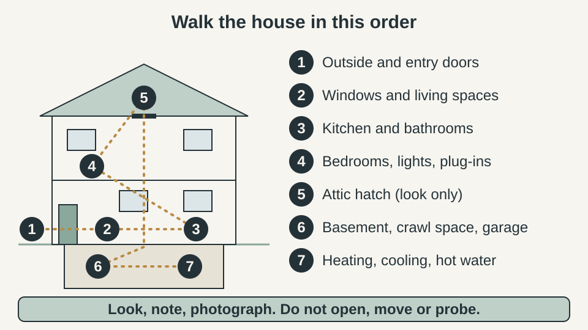
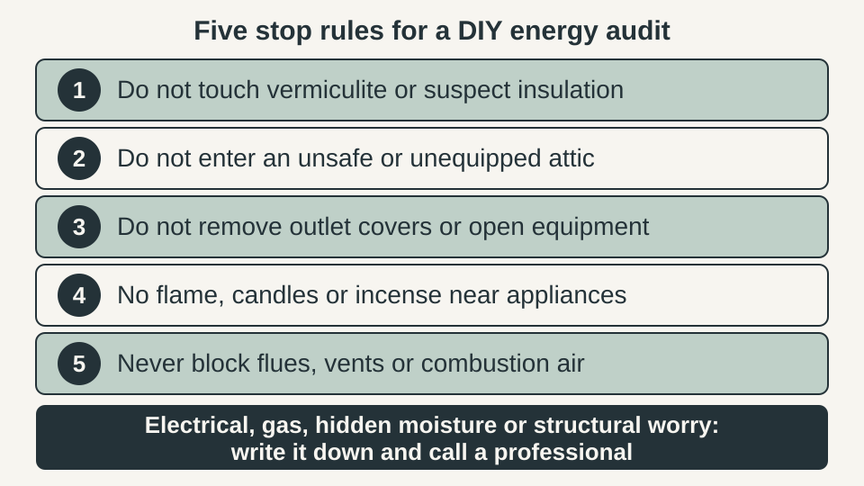
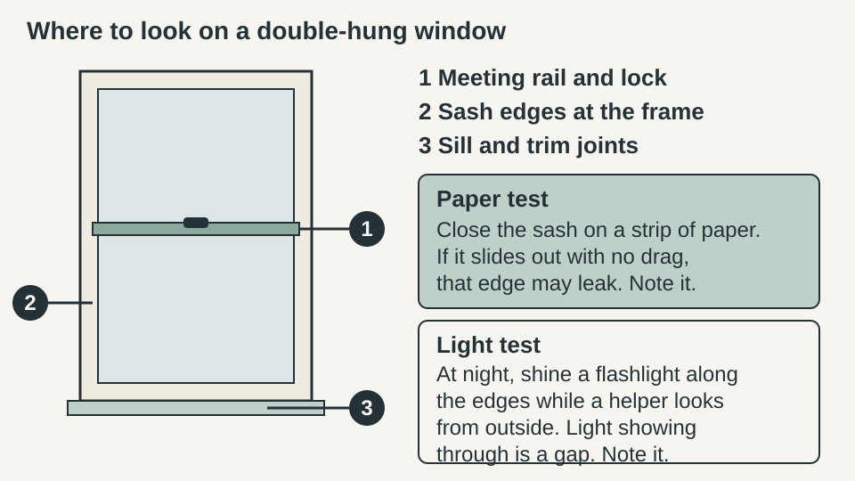
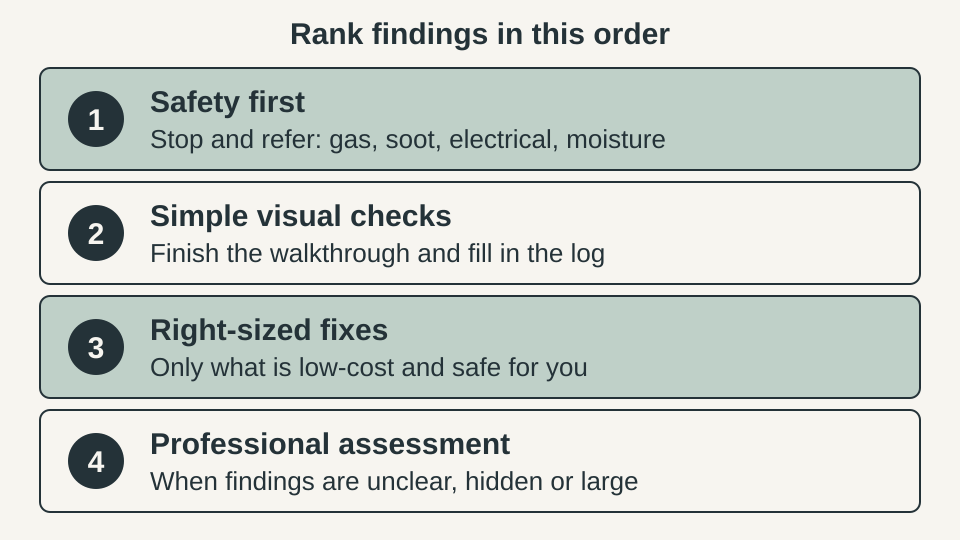

WEEKEND PROJECTS · HOME ENERGY
DIY Home Energy Audit: A Room-by-Room Walkthrough to Find What to Fix First

A DIY home energy audit is a careful walk through your house with a flashlight and a notebook. It does not measure anything and it does not replace a professional assessment. What it gives you is a written list of what you saw, ranked so safety comes first and guesses come last. This guide gives you the route, the stop rules and a log you can copy.
The quick answer
- Walk the house once, in order: outside and doors, windows and living spaces, kitchen and bathrooms, bedrooms and lights, attic hatch, basement or crawl space, then heating, cooling and hot water.
- Look, note and photograph. Do not open, move, probe or test with a flame.
- Log each finding with where it is, what you saw, the evidence, a priority from P1 to P4 and the next step.
- Rank in this order: safety first, simple visual checks, right-sized fixes, then a professional assessment for anything hidden, unclear or large.
- A walkthrough cannot measure air leakage, see inside walls or judge combustion safety, and it cannot tell you what a fix will save.
Quick plan
| Time | About 45 to 60 minutes, plus a few minutes of setup |
| Cost | Free. A flashlight, your phone, paper and a step stool are enough |
| Best for | Owners and renters who want to know where to start before spending money |
| Goal | A ranked log of what to fix, what to watch and what to hand to a professional |
Stop rules: what this audit never touches

Some official guides go further than we do. ENERGY STAR and the Department of Energy both describe removing an outlet cover to look at wall insulation, and ENERGY STAR describes a smoke test with incense while exhaust fans run. We leave both out on purpose. Opening an electrical box, or lighting anything near combustion appliances, is not a job for a first walkthrough, and a flashlight gives you enough to decide what comes next.
- Vermiculite. ENERGY STAR warns that vermiculite insulation, a lightweight, pea-size, flaky gray mineral, may contain asbestos. Do not touch or disturb it. Write down where you saw it and ask your local health department about an approved lab.
- Attics. ENERGY STAR lists nails pointing through the roof deck and the risk of stepping through ceiling drywall. If your attic is not safe and equipped for entry, stay at the hatch.
- Combustion appliances. Never block flues, vents or combustion air openings, and do not use candles, incense or any flame to test for drafts near them.
- Anything electrical, gas, structural or hidden-moisture related goes in the log as a concern for a qualified professional. If a carbon monoxide alarm sounds, get everyone outside and call 911 from there.
Set up in 10 minutes
Gather a flashlight or headlamp, your phone, a pencil, a sheet of paper and a step stool you trust. Open your utility account or find recent bills. You are not calculating anything yet, but the Department of Energy suggests knowing what you spend on energy, and a professional will ask. Pick a cold or windy day if you can, because drafts are easier to notice. Save the light test for after dark.
Photograph each finding before you move on, and put the room name in the file name or notes. The log below shows what to write.
Stop 1: Outside and entry doors
Walk the outside first. The Department of Energy points to places where two building materials meet, and to doors, windows, plumbing and electrical penetrations. Look for cracked or missing caulk, gaps where pipes or wires enter, and worn door sweeps or weatherstripping.
- Close each exterior door and look at the bottom edge and the sides for daylight.
- At night, shine a flashlight along door edges while a helper watches from the other side. Light showing through marks a leak, according to ENERGY STAR.
- Log each gap with a photo. Do not caulk or tape yet.
A door that shows light is usually a small fix. Our guide to stopping a drafty door without replacing it covers the repair once you have noted the spot.
Stop 2: Windows and living spaces

- Meeting rail and lock. Lock the window. The two sashes should pull snug where they meet.
- Sash edges. Look for gaps between each sash and the frame, and for worn weatherstripping.
- Sill and trim. Look for cracked caulk or gaps where the trim meets the wall.
- Paper test. ENERGY STAR suggests closing a window or door on a piece of paper. If you can pull it out without tearing it, that edge leaks.
- Baseboards and ceiling joints. The Department of Energy lists gaps along baseboards and where walls meet ceilings as places to check.
- Outlet and switch plates on outside walls. Hold the back of your hand near the plate. Cool moving air goes in the log. Do not remove the plate.
If you have a fireplace, note whether the damper stays open when the fireplace is not in use. Ask a professional before changing it, and never close a damper on a gas log set. Also write down which rooms feel too hot, too cold, stuffy or damp. Those comfort notes are what a professional will ask about first.
Stop 3: Kitchen and bathrooms
- Exhaust fans. Does the fan run, sound normal and pull a tissue to the grille? Is the grille loose or dusty?
- Moisture clues. Mirrors that stay fogged, peeling paint, ceiling stains or mildew near the fan belong in the log. Our guides on reducing bathroom condensation and choosing a bathroom exhaust fan help once you know which problem you have.
- Penetrations. Look for gaps where pipes enter walls under sinks. The Department of Energy lists plumbing penetrations as places to seal.
- Hot water use. Note dripping faucets and running toilets. A visible leak that keeps spreading, or a soft or stained surface, is a P1 or P4 item for a plumber.
Stop 4: Bedrooms, lights and plug-in loads
- Bulbs. Note which fixtures still use older bulbs. The Department of Energy suggests looking at the brightness in lumens on the packaging rather than watts, and considering ENERGY STAR LED bulbs.
- Plug-in devices. Walk the rooms and list what stays on or in standby: TVs, game consoles, chargers, a second refrigerator, a dehumidifier. The Department of Energy suggests unplugging items when not in use to prevent standby loads. Our guide to what you can plug into a smart plug shows which ones are safe to schedule.
- Heat. If a plug, cord or outlet feels hot, looks scorched or smells burnt, stop using it and log it as P1 for an electrician. Do not open it.
Stop 5: Attic hatch (look only)
- The hatch itself. The Department of Energy says a hatch above a heated space should be insulated about as well as the attic, weatherstripped and snug when closed. Write down what you see from below.
- Insulation from the opening. With a flashlight, look at the insulation without stepping in. ENERGY STAR’s quick check: if it is level with or below the floor joists, you probably need more, and if you cannot see the joists it is probably enough. You will see only part of the attic, so log what you could not see too.
- Stop signs. Vermiculite, damp insulation, dark stains on the roof deck or animal droppings go in the log as P1 or P4. Close the hatch and do not disturb anything.
ENERGY STAR’s own list for entering an attic includes boards to walk on, a hard hat, safety glasses, gloves and a dust mask, and it says to walk only on joists. This audit stops at the hatch.
Stop 6: Basement, crawl space and garage
- Look from the doorway or access. Do not crawl into a tight, dark or wet space for this audit.
- Insulation and gaps. Note whether you see insulation under the floor above or along the foundation wall, and whether it is missing, sagging or damp. Note gaps where the house meets the foundation.
- Moisture clues. A musty smell, white powder on walls, standing water or damp insulation is a P4 item. Start with how to fix a damp crawl space and, for sizing, what size dehumidifier a crawl space needs.
- Garage. If the garage is attached, check that the door into the house closes against weatherstripping.
Stop 7: Heating, cooling and hot water (look only)
- Thermostat. Note the type and whether it has a schedule. If you are thinking about a smart one, check your wiring first with our guide to a smart thermostat without a C-wire.
- Filter. If the filter slot opens without tools and without touching anything but its own cover, look at the filter. A visibly clogged filter is a P3 item. Do not open sealed panels.
- Ducts. The Department of Energy says dirt streaks near duct seams can mean leaks. Note visible ducts in unheated spaces. Sealing ducts is work for a qualified professional.
- Hot water. Note where the water heater and hot water pipes are, whether pipes in unheated spaces are insulated, and any drips, rust or puddles. Leaks go to a plumber.
- Combustion appliances. Look at the surroundings, not inside. The Department of Energy says burn marks or soot at the burner or vent collar, or visible smoke in the utility room while the appliance runs, point to poor draft. Log it as P1, do not use the appliance if you are unsure, and call your gas utility or a qualified technician.
Rank what you found: safety first

- P1 Safety. Soot or burn marks, hot or scorched outlets, a gas smell, vermiculite, active leaks. Stop and refer before doing anything else.
- P2 Simple visual check. You noticed something but are not sure. Re-check on another day, in other weather, or with a helper.
- P3 Right-sized fix. Visible, low-cost and safe for you: a worn door sweep, cracked caulk, a dirty filter, older bulbs.
- P4 Professional assessment. Anything hidden, large or technical: unknown attic insulation, suspected duct leaks, moisture, rooms that never feel right.
Within each level, start with the cheapest and easiest item. Do not buy anything because of a log entry alone. Match the fix to the evidence you photographed.
Copy this log
Use one block per finding. These example rows are illustrations of how to fill it in, not findings from a real house.
| Where | What I noticed | Evidence | Priority | Next step |
|---|---|---|---|---|
| Front door, bottom edge | Daylight at the sill | Photo from inside, door closed | P3 | Replace the door sweep, then repeat the light test after dark |
| Upstairs hall, attic hatch | Hatch lifts easily, no weatherstripping | Photo with hatch closed | P3 | Add weatherstripping around the hatch frame |
| Utility room, water heater | Dark streaks above the vent collar | Photo from a few feet away | P1 | Stop and call a qualified technician or the gas utility |
| Basement, back corner | Musty smell, white powder on wall | Photo, noticed on two visits | P4 | Ask a professional to find the moisture source |
On a phone, paste this into your notes app and copy it once per finding:
Where: What I noticed: Evidence (photo, light test, paper test): Priority (P1 to P4): Next step:
When to hire a professional
ENERGY STAR says a comprehensive audit by a home energy professional can pinpoint specific solutions and identify potential safety issues. The Department of Energy describes professional audits as including safety and air leak tests, a visual inspection of equipment and insulation and checks for signs of mold and moisture. Some assessments add diagnostic tests such as a house air leakage test, a duct air leakage test or an infrared scan.
Hire one if you logged anything at P1 or P4, if rooms stay uncomfortable even after simple fixes, or if you want numbers rather than clues. The Department of Energy says many utilities offer professional assessments at no or reduced cost, so ask yours first, and that a homeowner’s walkthrough can help the auditor. Bring your log and photos.
FAQ
How long does a DIY home energy audit take?
Plan on about 45 to 60 minutes for the walk itself, plus a few minutes to set up your notes. A larger home or one with several levels may take longer. If you are tired or rushed, stop and finish another day rather than skipping the stop rules.
Is a DIY energy audit the same as a professional one?
No. A walkthrough finds visible clues. The Department of Energy describes professional assessments as going further, with safety and air leak tests, a closer look at equipment and insulation, and checks for signs of mold and moisture. Use your log to decide what a professional should look at.
What do I need for a DIY home energy audit?
A flashlight or headlamp, your phone for photos, a pencil and notebook or the log below, a sheet of paper for the paper test and a step stool you trust. You do not need a ladder, a meter or any tool that opens something.
Can I do this if I rent?
Yes, because the audit only looks and notes. Do not caulk, tape or modify anything without your landlord’s approval, and send the landlord your photos and log entries for repairs, such as a worn door sweep, a leaky faucet or a damaged hatch.
Will the audit tell me how much a fix will save?
No. Visible clues do not measure how much energy a home uses or loses, so this guide makes no savings or payback promises. If cost matters, ask a home energy professional or your utility what they can estimate for your house.
How often should I repeat the walkthrough?
There is no fixed schedule. A good time is after you make a fix, so you can compare your new notes with the old ones, and when the seasons change, because drafts and comfort problems show up differently in hot and cold weather.
Keep going
- Stop a drafty door without replacing it for the most common cheap fix on the log.
- How to reduce bathroom condensation if fogged mirrors and peeling paint showed up.
- How to fix a damp crawl space if your basement or crawl space had moisture clues.
- Smart thermostat without a C-wire before you buy a new thermostat.
Sources and last checked
Pages were read on 12 November 2026. We chose not to repeat the outlet-cover and smoke tests those pages describe.
- ENERGY STAR, “What to Look For: DIY Checks and Inspections”: https://www.energystar.gov/saveathome/seal_insulate/identify-problems-you-want-fix/diy-checks-inspections
- U.S. Department of Energy, “Do-It-Yourself Home Energy Assessments”: https://www.energy.gov/node/364609
- U.S. Department of Energy, “Energy Saver Guide: Tips on Saving Money and Energy in Your Home” (July 2022): https://www.energy.gov/sites/default/files/2022-08/energy-saver-guide-2022.pdf